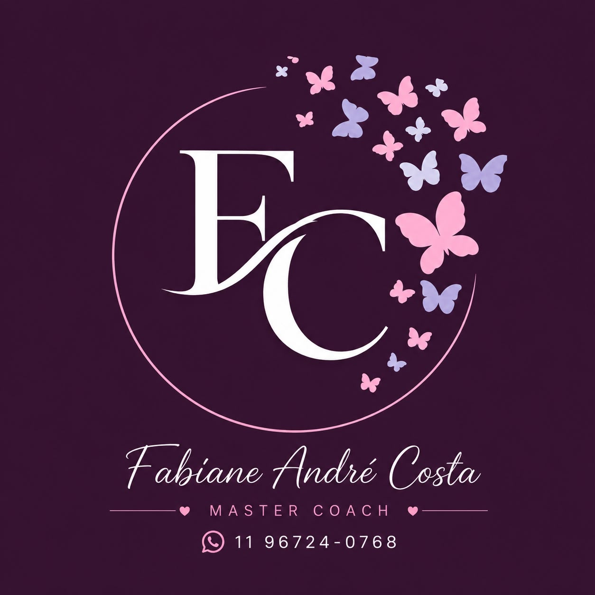

Desenvolvimento humano
Processos voltados ao autoconhecimento, desenvolvimento de competências, escolhas e construção de novos caminhos.

FABIANE ANDRÉ COSTADESENVOLVIMENTO HUMANOAgendar com FabianeMaster coach · Psicologia · Gestão de pessoas
Há 26 anos, Fabiane André Costa atua no desenvolvimento humano, conectando Psicologia, Gestão Estratégica de Pessoas e Coaching para apoiar pessoas, profissionais e organizações em seus processos de evolução.
Uma perspectiva
Ao longo de mais de duas décadas de atuação, minha trajetória foi construída a partir de uma convicção: pessoas não são apenas parte das organizações e das decisões — elas são o ponto de partida.
Sobre Fabiane
Sou Fabiane André Costa, profissional dedicada ao desenvolvimento humano, com 26 anos de atuação e uma trajetória construída entre Psicologia, Gestão Estratégica de Pessoas e Coaching.
Minha formação em Psicologia Organizacional e Clínica, somada à formação em Coach Criacional pelo IGT International e à atuação como Master Coach, ampliou minha forma de compreender pessoas, relações, escolhas e ambientes profissionais.
Áreas de atuação
Processos voltados ao autoconhecimento, desenvolvimento de competências, escolhas e construção de novos caminhos.
Acompanhamentos estruturados para objetivos, decisões e desenvolvimento profissional.
Uma visão voltada às relações entre pessoas, liderança, cultura e resultados.
Atendimento psicológico com agendamento, nas modalidades presencial e online.
Para empresas
Gestão de pessoas exige mais do que processos. Exige escuta, clareza e compreensão dos comportamentos, das relações e da cultura de cada organização.
Conversar sobre sua organizaçãoPsicologia
Um atendimento psicológico acolhedor e ético, construído a partir da sua história, do seu momento e das questões que deseja compreender. Um espaço para elaborar vivências, ampliar perspectivas e seguir com mais consciência e cuidado.
Como acontece
Compreender contexto, momento e necessidades.
Organizar percepções, desafios e objetivos.
Trabalhar competências, perspectivas e possibilidades.
Transformar compreensão em próximos passos.
Conteúdos
O espaço está preparado para receber artigos e reflexões autorais após a validação editorial.
Mídia
Um espaço para acompanhar um pouco mais do meu trabalho, das minhas reflexões e das conversas que ajudam a desenvolver pessoas.
Vídeos e entrevistas
Acompanhe vídeos e entrevistas disponíveis no YouTube.
Ver vídeos ↗Podcasts
Encontre participações e conversas em plataformas de áudio.
Avaliações
Cada processo é único. Estes relatos compartilham um pouco do impacto de construir novos caminhos com mais consciência.
Em breve, este espaço reunirá relatos de pessoas que viveram seus próprios processos de desenvolvimento.
Contato
Se você deseja compreender qual formato de acompanhamento faz sentido para o seu momento ou para a sua organização, entre em contato.
Agendar com Fabiane